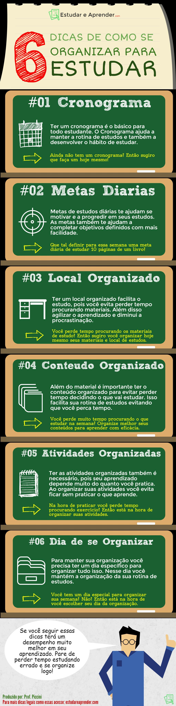

Como ter uma rotina de estudos
Todos precisamos de organização e na hora de estudar podemos sentir-nos confusos se não sabemos por onde começar, por isso vamos sugerir alguns conselhos para criar uma melhor rotina de estudos e evitar a distração no uso do celular de maneira desnecessária.
Alguns conselhos para ter uma melhor rotina de estudos para levar uma melhor distribuição e planejamento do tempo, necessário para cada atividade e matéria evitando a procrastinação, poderiam ser:
-
01 Tempo livre de estudo
Escolha a quantidade de tempo que será utilizada para seus estudos, e não esqueça de ter em conta também seus deveres diários e semanais, como tarefas de casa e responsabilidades, para garantir um equilíbrio adequado entre estudos, deveres e lazer. O tempo vago será usado para estudar e focar de maneira responsável em cada disciplina, focando nas mais urgentes e/ou importantes.
-
02 Organização das disciplinas

Fazer uma lista de tarefas, trabalhos e disciplinas que precisem apresentar. Procurando e prestando atenção sempre nas quais você tenha mais dificuldade. Também pode alternar as matérias para evitar estancar-se.
-
03 Testes e simulados

As revisões e os simulados são uma ótima ferramenta para conferir os conhecimentos adquiridos.
-
04 Descanso adequado

O melhor seria incluir descanso na sua rotina de estudos e melhorar sua qualidade de sono para obter um desempenho maior no momento das atividades.